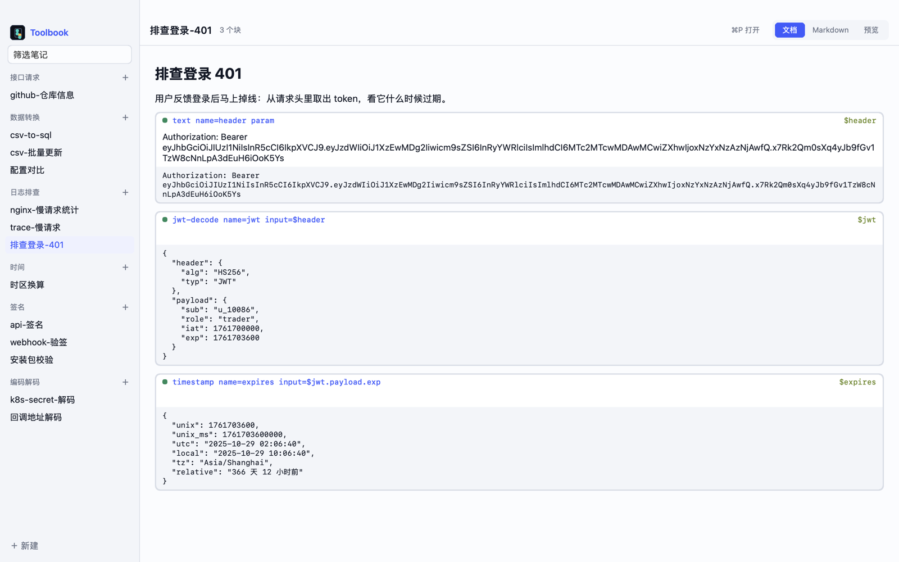

Notes that do the work.
Toolbook is a notebook of developer tools. Write your reasoning in Markdown and drop in blocks that decode a JWT, turn CSV into SQL, sign a webhook or call an API. Blocks pass data with $name, and everything downstream recomputes as you type.
Why does login drop right away?
Paste a token. The two blocks below it recompute as you type.
Decoded in your browser. Nothing you paste leaves this page.
One note, three ways to read it.
A note is a plain Markdown file in ~/Toolbook. Read it as a document with results under each block, edit the Markdown itself with results beside each block, or preview the page you would share.

The document view. Each block shows its result right under it, and a green dot when it ran. The app's interface is in Chinese.
Twenty tools, chained like steps.
Each block names a tool in its first line. name= gives its result a name, and input=$name reads another block's. Mark a block param and callers can fill it in from outside.
json · pick · filterFormat JSON, take fields with JSONPath, keep the rows that matchcsv · mapCSV into a table, deduped and checked; rename and keep columnsto-json · to-sqlA table as JSON, or as INSERT and UPDATE statements for MySQL, PostgreSQL or SQLitejwt-decodeA token's header and payloadbase64 · urlEncode and decodehash · hmacChecksums and signatures, in hex and Base64timestampUnix time and dates, across time zones, with how long agoregex · diffMatches and groups; what changed between two texts or JSON valueshttpA request with headers and a body; runs only when you askjsA JavaScript expression over earlier resultsflowAnother note, run as one stepsecret · textA secret read from the environment and never written to the note; plain input
Runs where you work.
The note is the program. The same file runs in the app, in a shell script, or in an AI agent's hands.
The Mac app
A native editor built on Native Shell. Thirteen themes, quick open, and an HTML page to share with each step from input to output.
# ⌘↵ runs HTTP blocks # ⌘/ switches to Markdown # ⌘P opens any note
The terminal
Pass inputs by name, read files or standard input, get JSON back. Exit codes tell scripts which block failed.
$ toolbook run csv-to-sql.md \ --input rows=@data.csv $ cat data.csv | toolbook run \ csv-to-sql.md --input rows=@-
Claude and Codex
The bundled skill teaches an agent to find your notes, see what they take, and run them. Export any note as a skill of its own.
$ toolbook list --json $ toolbook describe csv-to-sql.md $ toolbook export-skill csv-to-sql.md
Install
Download the app for Apple Silicon Macs. The first launch fills ~/Toolbook with thirteen example notes, from Nginx logs to Kubernetes secrets.
- Download Toolbook.dmg and drag Toolbook into Applications.
- Toolbook is signed but not notarized by Apple, so macOS blocks the first launch. Open System Settings → Privacy & Security and click Open Anyway, or clear the quarantine flag before opening the dmg.
$ xattr -d com.apple.quarantine ~/Downloads/Toolbook.dmgLater versions install themselves.
- For the toolbook command line, build it with Rust.
$ cargo install --git https://github.com/wenlingang/toolbook \ toolbook-cli --locked